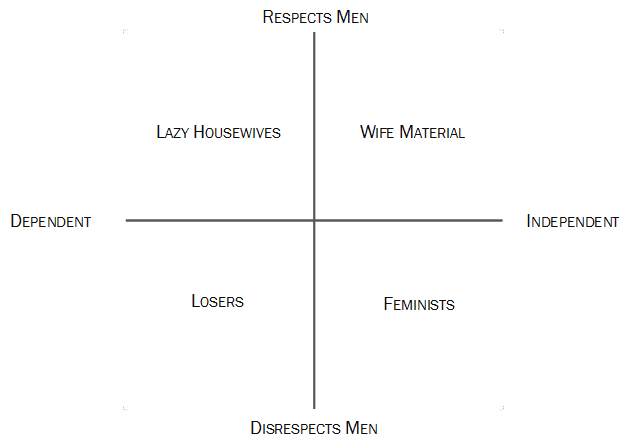
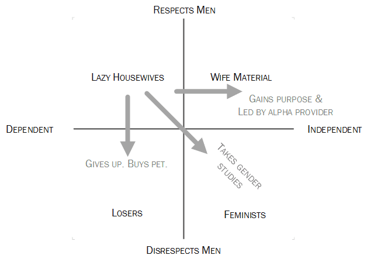
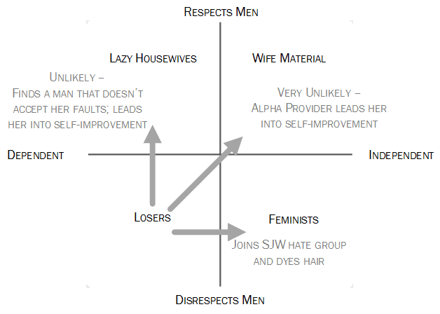
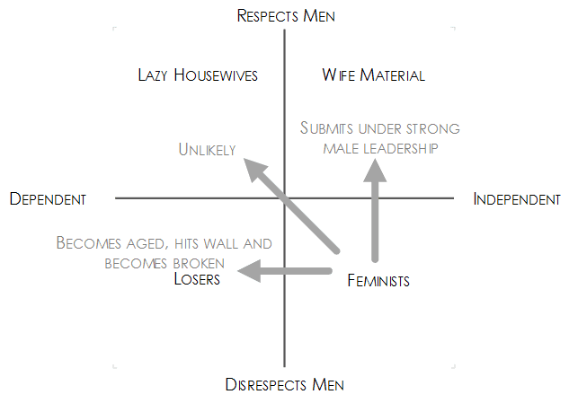
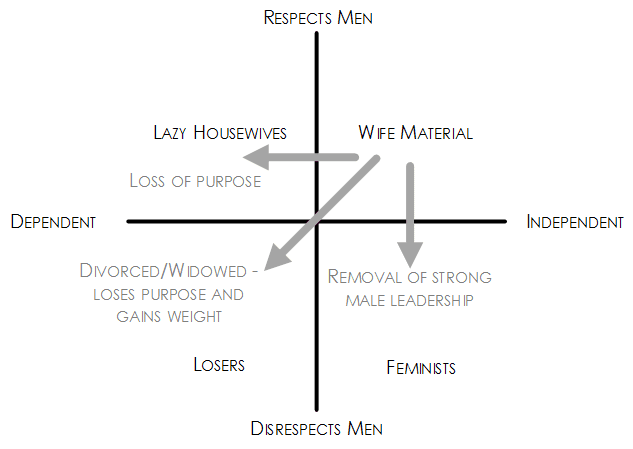

< < < Back
4 Types Of Women Within The Femininity Matrix – Return Of Kings
This femininity matrix identifies women worthy of your time, effort and resources and those that will lead you to ruin. It provides practical strategies for maneuvering each female archetype towards wife material. This follows on from the 4 Types Of Men Within the Masculinity Matrix.
In a well-known but largely misunderstood Biblical verse, God commands each man to love his wife and the wife to submit to her husband. Ironically, these tasks are the hardest for each gender to perform respectively. Loving women is not the idealization of women. It does not equate to praise, presents or platitudes. True love includes chastisement for character improvement and appreciation for good behavior.
Female submission is respect and reverence for her husband. Critical for success, this requirement is rarely seen in modern relationships. We have it backwards. Women say “I love you,” hoping to hear it back. After introspection, which would you rather hear from your wife or girlfriend?
(a) I love you
(b) I respect you
Now, which of those statements is harder for a woman to say? I propose the following dynamic:
Man: I love you
Woman: I respect you
Respect is not just the key
Respect is central to judging a man’s character. To establish if a woman is worth investment or is for divestment ask yourself (i) Can this girl respect men and (ii) is she capable of respecting my God ordained authority? Beyond her mid-20’s she is likely incapable of respecting men, but instead is contentious and will attempt to usurp your authority and power. Remember, man’s greatest weakness is woman and woman’s greatest weakness is the desire for power.

Like Eve, modern princesses are seduced by the promise of power derived from forbidden fruit. These women are deluded, believing it doesn’t bring death, metaphorically or spiritually.
This article was written for men to characterize women, not the converse. Women cannot accurately judge themselves, being exceptionally prone to denial. Four character types exist. The two attributes dividing quality women from standard issue are respect and independence. From this, four main subtypes arise, (1) the lazy housewife, (2) loser, (3) feminist and (4) wife material.
So where does your wife, girlfriend, mother, sister or co-worker stand? Use this guide to identify and subsequently exploit vulnerabilities in each female archetype.

Women mistakenly believe they are judged by the exact same criteria as men.
1. Lazy housewives
The lazy housewife is the most debated label of all archetypes. Suggestions such as “gold digger” or “trophy wife” have been thrown around in debate. The lazy housewife is an archetype with some level of respect for men. These women search for an easy life and to be taken care of.
They believe they deserve fortune, status, a respectworthy man and also a free ride. Problematically, she is dependent. This may be dependency on her support network, family, friends, or the state. She is not naturally inclined towards initiating any meaningful enterprise. Further training is necessary for the acquisition of skills to become a good homemaker and raise morally sound children. Don’t throw her out yet! She is still capable of respecting you if you are worthy. She has the potential to become a decent wife.

In this age of degeneracy, all a man requires is respect.
There are limits to your return on investment since any forecasted profit margin diminishes with ageing stock. To increase your ROI on the “lazy housewife”:
Foster proactivity, responsibility and purpose: The overriding goal is to transform your lazy housewife into a woman deserving of bearing and raising your children. This is not in exclusion to biological requirements of youth, fertility and health. Proactivity is unnatural to the lazy housewife. A princess mentality fostered by permissive parenting has resulted in dependency. These women can find purpose in raising children. Being thrust into adulthood may possibly help her overcome this.
She may resist engaging her pre-frontal cortex. Force her to think abstractly. Replace celebrity gossip with substance. Register her in a course that enriches rather than degrades her mind. Topics such as child care or education are recommended. You may have to reignite her natural instincts for childbearing and rearing after years of feminist propaganda.
You may decide to keep her even if she isn’t inherently intelligent, but is an honorable, caring mother and decent homemaker. In this case you should be responsible for your children’s education. Raising morally sound children is critical, compared to education alone. Skills and knowledge can be acquired at a later date but a stubbornly depraved heart leads to destruction.
Control her social circles: She is fallible. Like lost sheep, women blindly follow trends within their social circle. She is easily influenced by her newly divorced, promiscuous, adulterous or overly materialistic female ‘friends’. They will encourage her to be equally miserable by partaking in their corruption. Threats to your partnership must be eliminated. Preventing someone’s ruin is to love them. It is not logistically or emotionally easy, but it is right.
Micromanage her: Lazy housewives are prone to morph into slovenly daytime TV addicts. This cannot happen because she is your child’s role model. Due to her lack of initiative, you need to make plans for her to follow. Break up tasks and command the execution of each sequentially. Want a roast chicken dinner? Write a shopping list, give it to her and tell her to buy the ingredients. Give her the recipe a few hours before dinner and tell her to get cookin’… You will have a halfway decent homemaker if you accomplish this. As they say, “winner winner chicken dinner”.
2. Losers
Unless you are a sucker for punishment, don’t venture there. These women have either been dealt a bad genetic hand or they have eaten too much cake. Their primary failure is their inability to respect men. Some choose to hate and disrespect men in response to a paucity of male attention, even pre-wall.
Post wall, there are less takers and some choose to self-mutilate to carve out a niche presence within the market. They have a low capacity for change due to a high external locus of control, blaming the world for their predicament. They won’t go to the gym, eat healthily or even take shortcuts through cosmetic surgery.

Why? As an alpha you have better options. Loser women were never locked away in the tower but were the ugly cock-blocking stepsisters to the better-looking princesses.
Don’t Bother: Seeing the damsel in distress, the white knight desires to rescue her from herself. Understand that the damsel won’t fit through the tower door. This is life. A majority of these women have no chance of rehabilitation because of their inability to accept personal responsibility. You may have to leave them in the trash heap.

Fun game: one is a BuzzFeed ‘journalist’/harbor seal the other is Marjory the Muppet Trash Heap. I forget which is the correct answer.
3. Feminists
MRA’s, MGTOW’s, neomasculinists and self-respecting women love to hate feminists, but why? Feminism has been a major contributor in the devolution of society, corrupting the workplace, relationships and the family. Rockefeller Foundation funding, George Soros and CIA subversions have advanced this ideology. Even so, these disastrous outcomes would be impossible without female supporters and activists. These may not be the ugly banshees with odd colored hair we find humorous. Rather, they are also superficially feminine women who have prioritized their ‘career’ over family. Many incorrectly self-identify as anti-feminist.

Young feminists inherently desire a man to respect and submit under. They believe their prince will come. Older feminists have given up hope.
Feminists are not all intellectually challenged. They have successfully subverted language, influenced workplace and reproduction law reform and have massacred education; replacing quantitative measures of outcomes with emotions. This insidious movement has distorted the definitions of masculinity, femininity and also their true development. This is demonstrated by disagreement with the “husband material” label by readers of my previous article.
The word “husband” has been corrupted, now synonymous with being a cuck, chump, or weak. Unapologetically, I do my part in reclaiming its true definition. It denotes a man who is strong in mind, body and character, who is masculine, a leader and protector and provider for his wife and family. A weak, effeminate man unable to lead his household is not a husband. He is a failure.
Feminist beliefs are illogical and cancerous. This malignancy is spreading due to the lack of male authority in society. Feminists do not respect male authority and scheme to subvert this. In a previous era, independent women made great wives and mothers. *Cue outrage* Hear me out.
The difference between wife material and feminists is an attitude shift. Instead of respecting men, they choose not to. These women need security. In this world of unstable marriages and weak men, feminists sought security in themselves. This act of self-preservation resulted in a self-fulfilling prophecy.
In replacing femininity with masculine trappings to survive the corporate wilderness, she became less appealing to the alpha man she desired. These women require strong traditional male leadership under a man worthy of respect in order to submit. Under the right conditions, they make proactive hard working homemakers and mothers. Their natural initiative and intelligence have been misappropriated for the workplace. Societal conditions favoring the formation of leadership in men have been broken. We need to relearn what our forefathers-forefathers knew. A return to kingship, so to speak.
The princess can only be saved if she is young: If you are a teenager or a man in your early 20’s, there is hope. Find a younger girl and stamp the feminist out of her. Parts of her will continue to cling to feminist propaganda. Convince her of her inevitable destruction following the life script she has accepted. Give her an alternative life plan. Submission under your alpha dominion is what she truly desires. You need to gain her respect to even begin to break her. Use hypnopaedic repetitions of your support of motherhood. Make her feel secure in your leadership.
She must understand your provision is dependent upon her submission. There is no room for compromise. Your job is made harder if she has already entered the workforce. She has initiated her plan B and will be resistant to liberation, unless you prove yourself to be worth the risk.
Play upon her fears: Fear is the feminist’s greatest strength and weakness. Fear drives her towards career success. She amasses social and financial capital, an insurance policy in case she fails to attract an acceptable mate. Exploit her weakness. Do not underestimate her fear of losing social and financial capital, beauty and power. She will typically repress these fears until one day she is confronted by her post-wall unfiltered selfie.
An effective strategy is repeating anecdotes that expose these fears. One example could include, “I have noticed that women lose their youthful spark after 25. After this, they find it harder to get married”. She may verbally disagree, but this will plague her mind unless she has a great capacity for repressing truths. Avoid directly referring to her failings unless previous attempts have only furthered her denial. Wear her down. Once you provoke an existential crisis, insert your solution.

Her greatest fear. Exploit it wisely.
4. Wife material
Not naturally occurring. They are designed, sculpted and maintained for this very purpose. Men delude themselves in believing they possess naturally occurring wife material. All women suffer from this same delusion, believing they are worthy to be the wife of any man. They also believe they should be treated as wife material without personal effort. Upper-right quadrant women forged from the nuclear furnace are even more rare than upper-right quadrant men.
The perfect wife must be virtuous. This cannot be trained, but safeguarded. She submits to her husband’s authority. She must not bend to societal norms, but do what is right instead. She critically evaluates decisions based on their benefit to her household and not herself. Foster a hard-work ethic. Teach empathy to keep her heart kind. Keep her aligned to your values in order to raise morally sound children. Keep her in line and your children will follow. You are the leader, so show her the way.

Like unstable isotopes, the wife material archetype requires energy to keep things from blowing up.
Don’t be deluded: If you believe you have found a woman that is wife material, ask the questions: (i) does she respect men? (ii) is she capable of completing a common goal independently? (iii) has she ever been a harlot? (This one is a deal breaker). If you happened across wife-material, think again. No woman can attain this position without refinement. Don’t be easily fooled. Some women utilize red-pill knowledge to create the perfect wife facade. I’ve seen it happen, the results ain’t pretty.
Men have to lead change
Remember, nobody has a perfect wife. If you think you do, you are delusional and she will only disrespect you for it. Take responsibility for her improvement. They are incapable of accomplishing this by themselves. Use the carrot or the stick accordingly. If they are dependent, use the carrot of purpose to help them learn responsibility. If they disrespect you, ‘beat’ them with the stick of submission.
Women who respect men are a severely endangered species. Their dwindling populations are caused by the destruction of their natural habitat, the nuclear family. Their forced journey into the wilderness for provisions is due to the emasculation of the male population. The lone alpha provider gains respect from lost females. Their strong leadership fosters correct female behavior through providing purpose and drive, guarding their genetic legacy from self-destructive degeneracy.
Read More: 4 Types Of Men Within The Masculinity Matrix